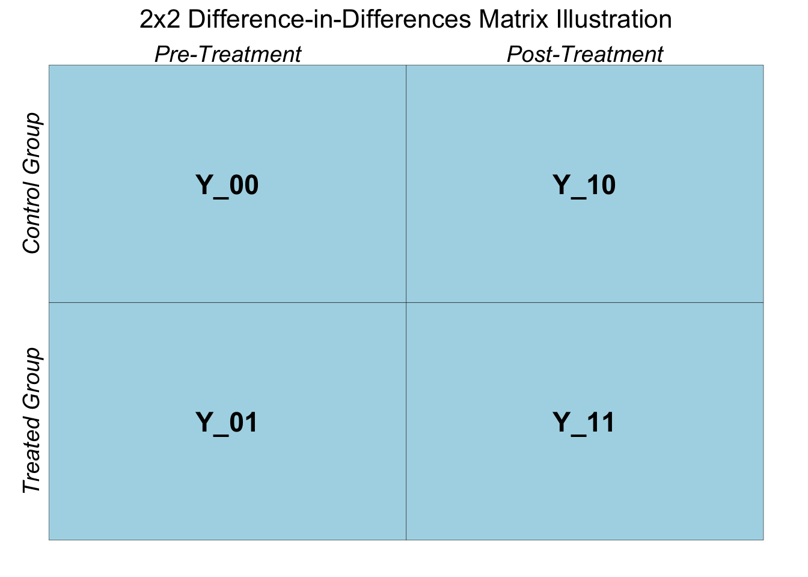

3 Canonical Difference in Differences Framework
We would like to alleviate the aforementioned concerns. One way to address the second concern, i.e., outcomes in pre-treatment period may differ significantly between the treatment and control groups, is to take out the mean difference in outcome during the pre-treatment period from the mean difference in outcome post treatment. This approach uses two groups and two periods, which is termed as the canonical DiD case.
The canonical DiD can be seen using a \(2\times 2\) matrix.
# Create the data for the 2x2 matrix
data <- data.frame(
group = rep(c("Control", "Treated"), each = 2),
time = rep(c("Pre", "Post"), times = 2),
outcome = c(5, 5, 5, 7), # Example outcomes
label = c("Y_11", "Y_01", "Y_10", "Y_00") # Labels for matrix cells
)
# Base plot
ggplot(data, aes(x = time, y = group)) +
geom_tile(fill = "lightblue", color = "black") + # Create the matrix grid
geom_text(aes(label = label), size = 6, fontface = "bold") + # Add cell labels
annotate("text", x = 1, y = 2.55, label = "Pre-Treatment", size = 5, fontface = "italic") +
annotate("text", x = 2, y = 2.55, label = "Post-Treatment", size = 5, fontface = "italic") +
annotate("text", x = 0.45, y = 2, label = "Control Group", angle = 90, size = 5, fontface = "italic") +
annotate("text", x = 0.45, y = 1, label = "Treated Group", angle = 90, size = 5, fontface = "italic") +
labs(
title = "2x2 Difference-in-Differences Matrix Illustration",
x = NULL,
y = NULL
) +
theme_minimal() +
theme(
axis.text = element_blank(),
axis.ticks = element_blank(),
panel.grid = element_blank(),
plot.title = element_text(hjust = 0.5, size = 16)
)
Note that the naive estimator simply is: \(E(Y_{11}) - E(Y_{01})\). This can be considered as the first difference.
Next, we construct the second difference across the two groups during the pre-treatment period as: \(E(Y_{10}) - E(Y_{00})\).
The difference-in-differences estimate: $_{did} = \(E[Y_{11} - Y_{01}] - E[Y_{10} - Y_{00}]\). This defines the term “difference-in-differences” as it involves two differences in means across the treatment and control group; one post treatment and the other prior to the treatment.
In the ACA-Medicaid expansion example that involves two groups and two time periods:
cat("did estimate= \n", naive - naive_pre)## did estimate=
## -5.813426This suggests that uninsured rate dropped by 5.81 percentage points following the Medicaid expansion in year 2014.
Let’s formally visit the DiD approach to appreciate some necessary assumptions while connecting it with ATT.
The ATT is given as:
\[\begin{equation} \tau = E(Y^1(1) - Y^0(1)| D = 1) \tag{3.1} \end{equation}\]
Here, \(Y^1(1)\) is the outcome following the treatment, and \(Y^0(1)\) is the counterfactual, i.e., the outcome without the treatment. \(E(Y^0(1)| D = 1)\), the conditional mean outcome of the treatment group in absence of the treatment, is not revealed as it is the counterfactual. Our job still remains to come up with a valid counterfactual.
The validity of the difference-in-differences estimate rest on the parallel trend assumption. Let’s consider the canonical case of DiD with two groups (treatment & control) and two periods (before and after treatment). Formally the parallel trend assumption (PTA) is given as:
\[\begin{equation} E(Y^0(1) - Y^0(0)| D = 1) = E(Y^0(1) - Y^0(0)| D = 0) \tag{3.2} \end{equation}\]
Here, we have written the parallel trend assumption using the potential outcomes. \(Y^0(1)\) is the potential outcome in the post-treatment period in absence of the treatment, \(Y^0(0)\) is the potential outcome in pre-treatment period. All forms of potential outcomes are revealed (observed) except \(E(Y^0(1) | D = 1)\), which is average outcome for the treated group in the post-treatment period in absence of the treatment. The parallel trend assumption states that, in absence of the treatment, outcomes for the treatment and control groups after the treatment would follow similar trend to that of the pre-treatment period.
How does the parallel trend assumption help in identifying the ATT \((\delta)\)? To see this, lets expand equation @ref{eq:att}.
\[ \begin{align} \delta = E(Y^1(1)| D = 1) - E(Y^0(1)| D = 1) \\ = E(Y^1(1)| D = 1) - E(Y^0(1)| D = 1) + E(Y^0(0)| D = 1) - E(Y^0(0)| D = 1) \\ = \{E(Y^1(1)| D = 1) - E(Y^0(0)| D = 1)\} - \{E(Y^0(1)| D = 1) - E(Y^0(0)| D = 1)\} \\ = \{E(Y^1(1)| D = 1) - E(Y^0(0)| D = 1)\} - \{E(Y^0(1)| D = 0) - E(Y^0(0)| D = 0)\} \\ = \{E(Y(1)| D = 1) - E(Y(0)| D = 1)\} - \{E(Y(1)| D = 0) - E(Y(0)| D = 0)\} \end{align} \]
Moving from line 3 to 4 makes use of the parallel trend assumption as given in equation @ref{eq:ptrend1}. So it turns out that under the parallel trend assumption, DiD framework uncovers the ATT.
However, the parallel trend assumption cannot be exactly tested since it is impossible to observe the potential outcome of the treated group in absence of the treatment. If we cannot provide a feasible test for the parallel trend assumption, how can we then attest for the validity of the DiD estimate?